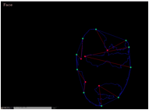

Hand and Face
CS 440 P 1
Peter LaFontaine
Ben Lee
2/13
Problem Definition
Our program can distinguish between
a face and a hand. This is not so much useful as it is fun, since it can be
used to tell if someone has their hands on the screen.
It could be used to alert a blind person if someone's hand
is on the screen in a Skype chat or if only there face is on the screen. I'm
making the assumption that the only things that will be on the screen are
either a hand or a face. There are very often more things on a screen than
either a hand or a face.
Methods and Implementation
We started out by first implementing the Skin detection
method that was given to us in lab. From there we used the openCV methods
drawContour, convexHull, and convexityDefects to get outlines of objects in the
camera. In order to get rid of the smaller objects, we used an if statement
that disregarded and area that was less than 30,000 pixels. We then used the
methods openCV methods circle and line to draw the different points and lines
between the two points. We then used the erode function to further clean up and
get rid of extraneous parts of the camera. After that we implemented our angle
method in an if statement which also contained a counter variable. After this
if statement, we have two drawContours which print the contours and hulls
separately. To finish up, we print to the video feed, whether the object is a
hand or a face. We finish with the imshow method, which actually prints the
video feed to the screen.
Experiments
We performed 7 tests, to test if it
was possible to get false negatives with our method of measuring what
constituted a hand or a face. Due to the amount of erosion that we used, the
face generally had fewer points for the computer to find than the hand, thus we
simply said if there were fewer than 5 angles on the screen then there was a
face on the screen, and if there were more than 5 angles then there was a hand
on the screen. This caused several false positives for the program mistaking a
hand with fewer than 5 fingers as a face, and a screen with both a hand and a
face as a hand. The metrics we used were angles as the actual units and we used
the face and hands as measurements of the units.
Results
Trial 1

Trial 2
Trial 3
Trial 4
Trial 5
Trial 6
Trial 7

Conclusions
Our results show that there are
limitations to our method, because it is easy to trick the computer that there
is a face on the screen when there is really a hand, or that there is a hand on
the screen when there is really a face. We expected to find that the hand was
generally recognized as a hand and the face generally recognized as a face,
however when the face is very close to the screen or hair is recognized as part
of the face, the face can be mistaken for the hand. Conversely if the hand is
in a ball, or the screen picks up part of the arm as part of the hand, then the
program will perceive fewer angles, which will make it, seem like the arm and
hand is the face. We expected to find that the face was easier to detect with
fewer angles and that the arm was easier to detect with more angles, which was
confirmed in our tests, however our method could be improved by making it
harder to create false positives by having the computer actually recognize
different hand gestures and different facial features, so as to allow it to
read emotion and other things. Our main message is that this is a quick way to
figure out if an image contains a hand or a face.
Credits and Bibliography
We got the openCV methods from
And we got our angle and length methods from
https://github.com/simena86/handDetectionCV/blob/master/VS2013
Version/HandDetection/handGesture.cpp
We discussed concepts with Paavan Chopra
Credit any joint work or discussions with your classmates.